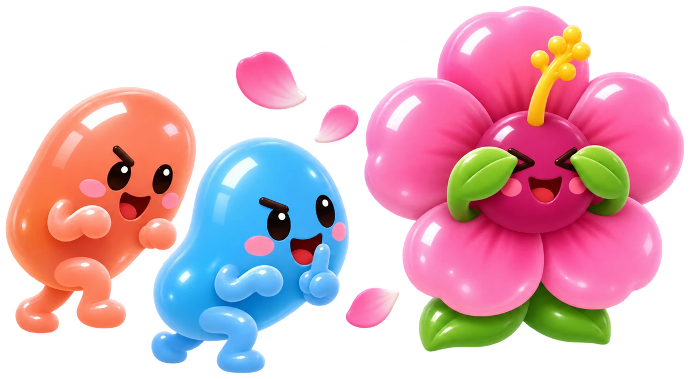

👀 보통
⏸ 잠깐
← 모션게임

무궁화 꽃이 피었습니다
카메라가 술래예요! 먼저 술래에게 도착하면 이겨요
🌸 "무궁화 꽃이 피었습니다~"
제자리 달리기·팔 흔들기로 앞으로 가요
🧊 "얼음!"
꼼짝 마! 움직이면 걸려서 뒤로 가요
몇 명?
🙋 혼자
👫 둘이서
술래 눈치
🙂 너그러움
👀 보통
🦅 매의 눈
술래 목소리
🔊 켜기
🔇 끄기
▶ 놀이 시작
🔒 카메라 영상은 이 기기 안에서만 써요. 저장하지도, 어디로 보내지도 않아요.
술래가 눈을 비비는 중…
카메라가 안 보여요
카메라를 쓸 수 있게 허락해 주세요.
처음으로
다시 해 보기
잠깐 쉬어요
처음으로
▶ 계속하기
도착!
🙌 두 손을 머리 위로 번쩍 들면 다시 시작해요
설정 바꾸기
▶ 다시 하기